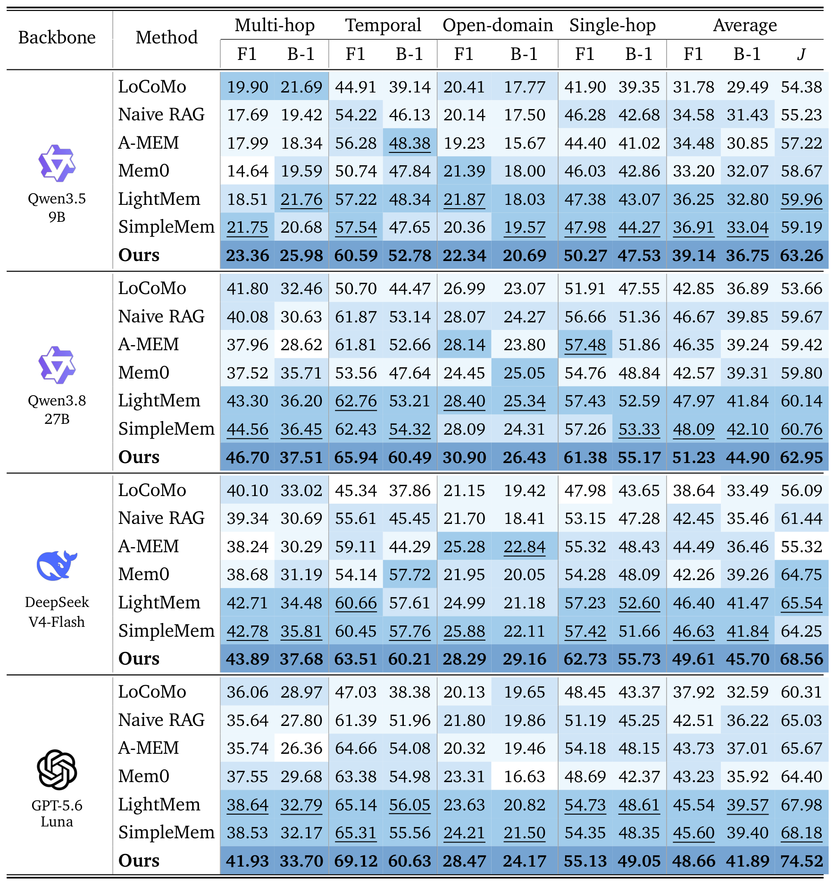
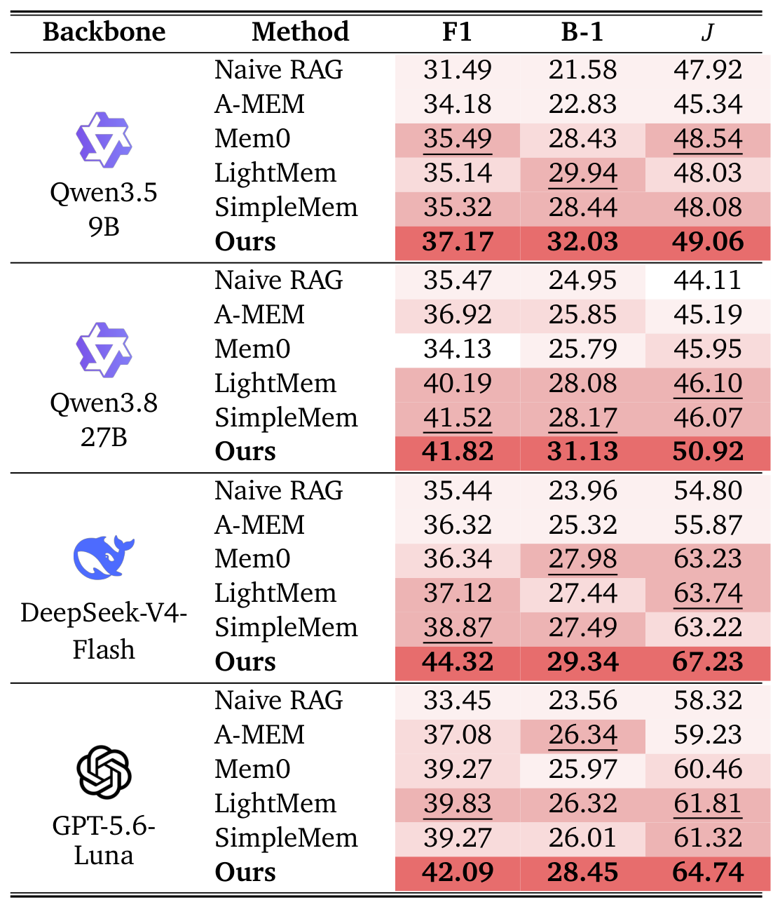
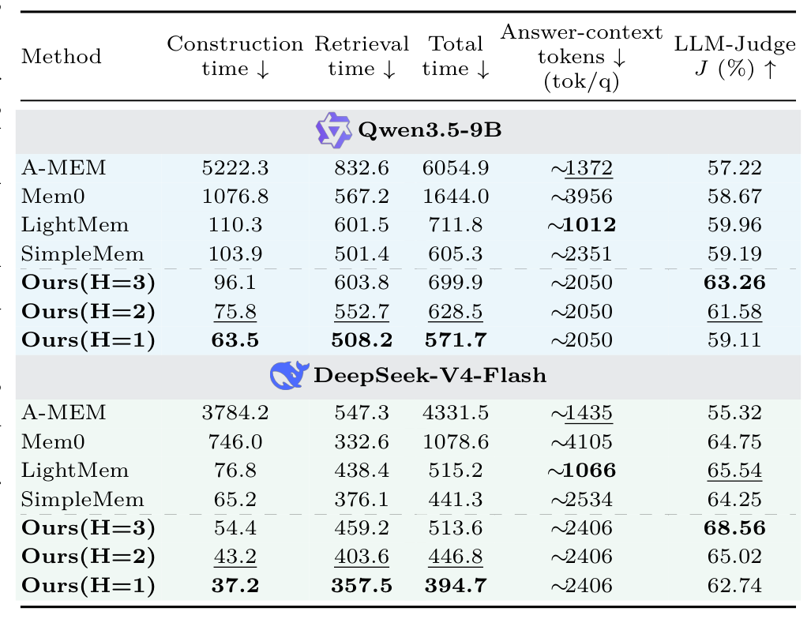

Results
LoCoMo

Table 1. Macro-averaged LoCoMo results over four question types. F1, BLEU-1 (B-1), and LLM-Judge (J)
are reported. Bold / underlined values are the best / second-best results.
TrawMem achieves the best average F1, B-1, and J under all four backbones — up to
+3.14 macro-F1 over the second-best baseline, with the largest gains on Temporal questions.
MemGallery

Table 2. Macro-averaged MemGallery results for four answer backbones over nine question types.
Across all backbones TrawMem ranks first in F1, B-1, and J, with gains of
+0.30–5.45 / +1.36–2.96 / +0.52–4.82 points over the second-best baseline.
Efficiency

Table 3. Efficiency and answer quality on LoCoMo. Times are s/root; answer-context tokens are
tok/q; H is the maximum thread-neighborhood expansion depth.
Compared with SimpleMem, TrawMem (H=3) uses 12.8% / 5.1% fewer answer-context tokens
on Qwen3.5-9B / DeepSeek-V4-Flash while scoring +4.07 / +4.31 J points higher.